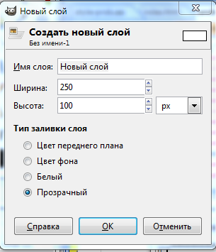

Параметры слоя
· Имя слоя — необходимо задать какое-либо имя, чтобы в дальнейшем можно было легко узнать данный слой в общей массе остальных слоев. Имя должно быть уникальным и не повторяться, желательно, чтобы оно отражало сущность содержимого слоя;
· Ширина и Высота — параметры размера вновь создаваемого слоя. В большинстве случаев слой создается того же размера, что и само изображение, поэтому значения размера изображения вводятся здесь автоматически. Справа от параметра Высота располагается опция выбора вариантов единиц измерения размера слоя.
· Тип заливки слоя — здесь нужно задать вариант содержания слоя: Цвет переднего плана, Цвет фона, Белый, Прозрачный. Наиболее востребован вариант Прозрачный, так как в этом случае данный слой не будет визуально перекрывать все остальные. Если выбрать другой вариант, то вновь созданный слой перекроет предыдущие.
Настроив все необходимые параметры в данном окне (а в большинстве случаев оставив у них стандартные значения), нажать кнопку OK.
Обратите внимание, что на панели слоев, над слоем Фон появился новый слой, который так и называется — Новый слой.
Слева от названия располагается небольшой прямоугольник, содержащий уменьшенный вариант изображения слоя. У слоя Фон этот прямоугольник белый, и соответственно видно пустое белое изображение. У слоя Новый слой прямоугольник клетчатый: так программа отображает прозрачное содержание.
Щелкнув по слою Фон, мы выделяем его, о чем свидетельствует серая линия. Щелкнув по слою Новый слой, мы убираем выделение со слоя Фон и выделяем Новый слой.
Выделите слой Новый слой, возьмите инструмент Кисть и нарисуйте какие-либо штрихи кистью цветом, отличным от цвета предыдущих штрихов. Таким образом получается комбинированное изображение, состоящее из двух разных элементов, каждый из которых располагается на своем собственном слое.
Замечание
При создании нового слоя всегда старайтесь задать ему уникальное имя: это позволит легко найти его в дальнейшем среди десятков подобных слоев.